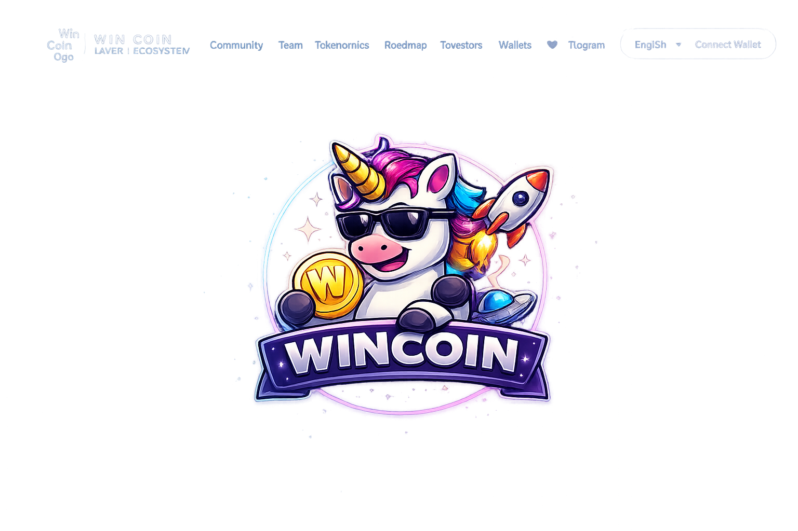
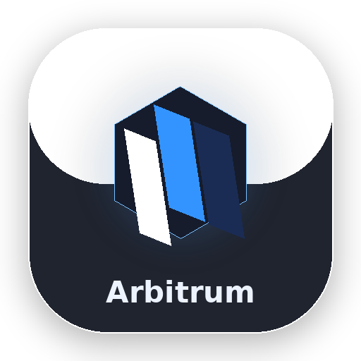
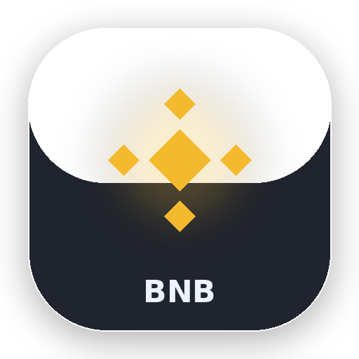
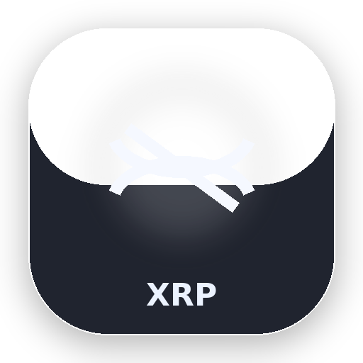
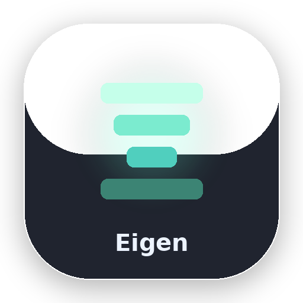
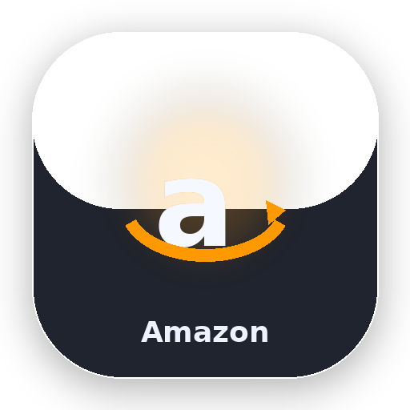
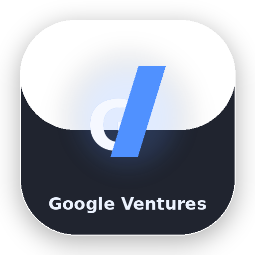
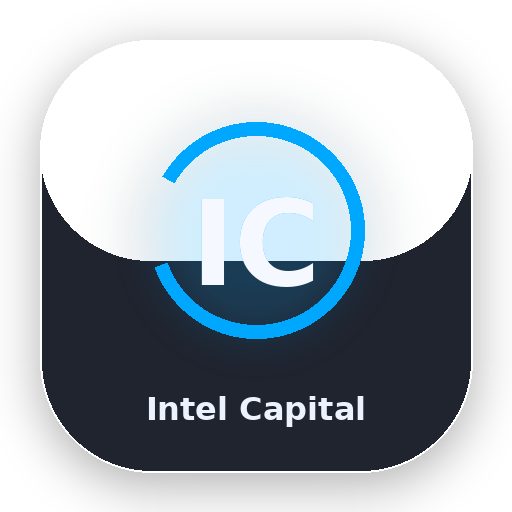
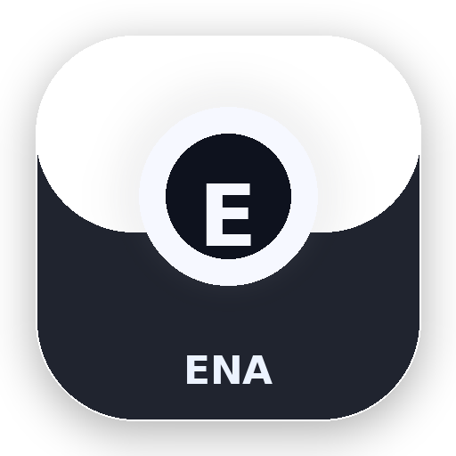

Win Coin Layer-1 Blockchain
Win Coin is a modern Layer-1 blockchain project focused on speed, trust, visibility, and long-term ecosystem growth.

Official Telegram
Join the community and stay close to project activity and discussion.
Open TelegramWhitepaper Access
A visible whitepaper entry improves trust and keeps long-form project information easy to access.
Go to Whitepaper SectionCommunity
Visible communication channels are critical for trust. Win Coin keeps X and Telegram front and center for stronger community presence.
Whitepaper
The whitepaper link and presentation layer should be visible, consistent, and easy to access from the homepage.
Project Document Access
The Win Coin whitepaper provides a cleaner overview of the project vision, ecosystem direction, token utility, and long-term roadmap.
Why it matters
A visible and consistent project document improves trust, helps new visitors understand the structure faster, and supports a more serious public presentation.
Logo System
The Win Coin visual identity is built around a clean primary logo, a recognizable mascot, and a consistent brand presentation across the ecosystem.

Primary Logo
The official Win Coin logo used for brand recognition, trust, and ecosystem presentation.
Mascot Identity
The mascot strengthens memorability, community presence, and the unique visual character of Win Coin.
Visual Consistency
This structure keeps the homepage clean and avoids broken or temporary logo placeholders.
Why Win Coin
A premium Layer-1 direction built around clarity, trust, and long-term ecosystem positioning.
Scalable Layer-1 Foundation
Win Coin is positioned as a Layer-1 blockchain with a clean structure, modern presentation, and room for long-term technical expansion.
Community-First Expansion
Official X and Telegram presence create a visible community layer, helping the project feel active, open, and easier to trust.
Premium Ecosystem Positioning
Strategic branding, partner visibility, and a premium interface help position Win Coin more seriously in the broader blockchain ecosystem.
What Can You Build on Win Coin
A flexible Layer-1 structure makes Win Coin suitable for multiple Web3 directions across products, applications, and community ecosystems.
DeFi Applications
Support lending, swapping, staking, and treasury-based protocols with a clean Layer-1 foundation.
NFT Marketplaces
Launch creator-driven collections, ownership layers, and collectible ecosystems with stronger branding value.
Web3 Gaming
Enable in-game tokens, digital rewards, and ecosystem participation around game-native economies.
Cross-chain Expansion
Position Win Coin for broader ecosystem connectivity and future interoperability narratives.
Community Platforms
Build community reward systems, loyalty mechanics, and social participation loops around the token.
Brand-led Web3 Products
Use Win Coin as the foundation for premium branded ecosystems that need clean design and investor appeal.
Tokenomics
Clean visual token structure designed to feel simple, fast, and investor-friendly.
Win Coin Utility
Beyond allocation, utility explains why the token matters inside the ecosystem and how it supports long-term network value.
Gas Fees
Win Coin can act as a native transaction layer for network operations and on-chain ecosystem activity.
Governance
Token-based governance structure can support community alignment and ecosystem direction over time.
Staking
Staking mechanics can strengthen holder participation and long-term ecosystem commitment.
Ecosystem Rewards
Community rewards and contributor incentives help support adoption, activity, and network engagement.
Access Layer
Win Coin can become an access token for future launches, community tools, ecosystem perks, and premium features.
Treasury Coordination
Utility expands when treasury capital is tied to ecosystem growth, grants, partnerships, and strategic support.
Roadmap
A simple roadmap creates direction, improves confidence, and helps the project feel more structured and serious.
Foundation
- Brand structure
- Website launch
- Community channels
- Core positioning
Expansion
- Partner visibility
- Ecosystem awareness
- Whitepaper visibility
- Community growth
Network Growth
- Layer-1 narrative strengthening
- Utility expansion
- Token adoption mechanics
- Broader ecosystem positioning
Long-term Vision
- Global reach
- Advanced integrations
- Ecosystem maturity
- Strategic scaling
Ecosystem Visibility
A calm premium layout helps the project feel more serious, scalable, and ecosystem-ready.
Important presentation note
Use ecosystem references carefully. If these are not official partnerships, label them as ecosystem visibility, market references, or design references instead of direct partners.
Trust-Focused Structure
The section below is framed as ecosystem visibility rather than official partnership verification.
Ecosystem References
This section is framed as market and ecosystem visibility, not as proof of formal partnership unless separately announced by the project.

Arbitrum
Recognized Layer-2 infrastructure visibility within the broader blockchain ecosystem.

BNB
Strong exchange and ecosystem association with wide market recognition.

XRP
Globally visible digital asset presence that adds familiarity to ecosystem branding.

Eigen
Advanced ecosystem visibility around blockchain infrastructure and network expansion narratives.

Amazon
Global technology familiarity that adds premium visual context and broader trust perception.

Google Ventures
Strong venture and technology recognition that improves presentation quality and external credibility.

Intel Capital
Enterprise technology familiarity that adds depth to the ecosystem positioning narrative.

ENA
Additional crypto ecosystem adjacency that strengthens Win Coin’s premium market framing.
Visibility Slider
A visual slider for ecosystem familiarity. Rename this section to official partners only if formal partnerships exist.
Team
Core contributors focused on network vision, technical development, ecosystem reach, and long-term strategic growth.
Founder
Defines the long-term vision, network direction, and strategic positioning of the project.
Engineering
Focused on blockchain architecture, performance, and the core Layer-1 technical foundation.
Growth
Builds awareness, communication, and community reach across key digital channels.
Partnerships
Supports ecosystem relationships, strategic introductions, and long-term expansion.
Wallet Connect
Lightweight example for MetaMask-compatible browsers. No heavy library is used.